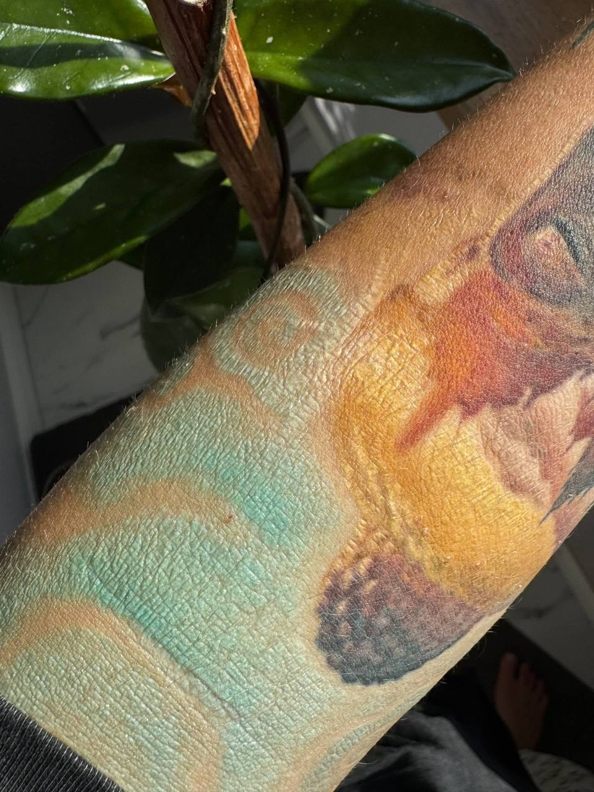
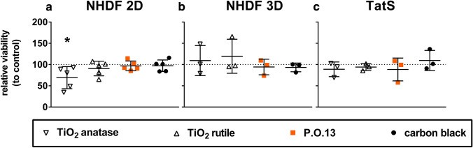
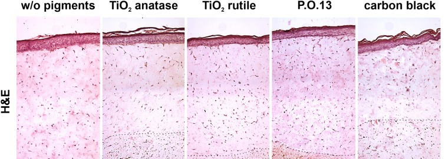
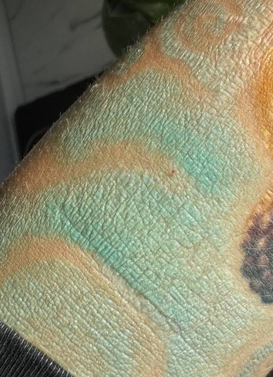
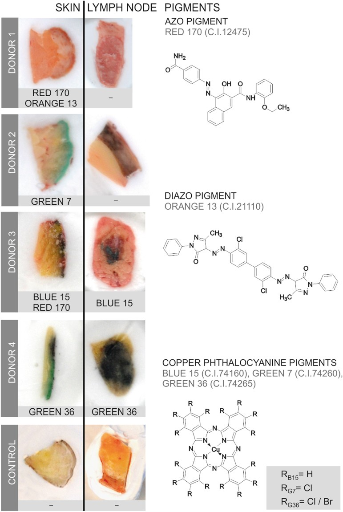
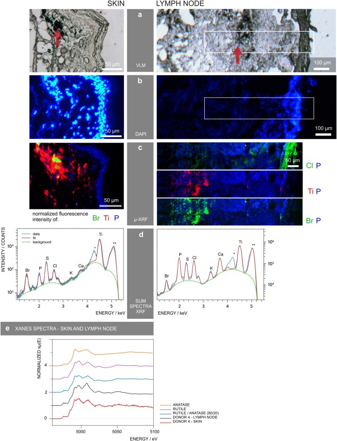

Что происходит с кожей в зоне диоксида титана (TiO₂)? Разбираем клинический случай и строим доказательную гипотезу — от фотографии к механизму.

Эта фотография меня зацепила. Кожа над цветными участками выглядит заметно старше соседней — и граница этого изменения почти совпадает со светлым пигментом.
Она заставила меня вернуться к исследованиям, которые я когда-то смотрел: про диоксид титана, фототоксичность и судьбу пигмента в коже.
Сегодня я не дам вам готовый диагноз. Я покажу, как я думаю над таким случаем — и где заканчивается знание и начинается догадка.
Цвет · текстура · кожный рисунок · ощущение сухости · рельеф · зоны светлого/белого пигмента · смешанные цвета · участки тёмного пигмента для сравнения · границы перехода
Визуальное впечатление «кожа выглядит старше» и установленный диагноз «фотостарение» — это два разных уровня знания. Сегодня учимся их не путать.
Может ли TiO₂-содержащий пигмент изменить свойства кожи вокруг себя?
На каждом уровне доказательная сила разная. Смешивать их — главная ошибка. Пройдём снизу вверх: от фотохимии в пробирке к тому, что видно на коже.
Один и тот же визуальный белый пигмент может иметь совершенно разный химический профиль.
«Белый цвет» ≠ химически однородный материал. Два одинаково белых пигмента могут вести себя под светом противоположно.
Вывод для специалиста: визуально одинаковый белый пигмент у разных производителей — это разные фотохимические профили. Цвет не говорит о реактивности.
Важно: мы не утверждаем, что каждый TiO₂-пигмент обязательно вызывает патологическое ремоделирование. Мы говорим, что есть основания эту цепочку исследовать.
Как под действием света пигмент в коже превращается в локальный источник окислительного стресса.
Это доказанный механизм: TiO₂-содержащие чернила под светом способны повреждать клетки кожи в культуре. Запомним уровень доказательности — он нам ещё понадобится.
Клиническое мышление начинается здесь: держим красивую гипотезу в голове — и сразу спрашиваем себя, чем именно она подтверждена. Дальше проверим это на модели живой кожи.
Поэтому фототоксичность «в чашке» — это ещё не доказательство вреда коже. Нужна модель, где пигмент находится в настоящей дерме.


Именно поэтому TatS сильнее 2D-культуры: пигмент окружён настоящим матриксом и прикрыт эпидермисом — как в реальной коже. Это и объясняет, почему «страшный» результат из чашки здесь не повторился.
Механизм доказан
≠
клинический эффект доказан.
Это принципиально разные утверждения. Специалист обязан держать их отдельно и не выдавать одно за другое.
Есть ли у человека что-то похожее — и что показывает гистология?
Это первый мостик от «механизма в пробирке» к структурному изменению ткани у живого человека рядом с TiO₂-пигментом.

Отсюда железное правило: нельзя увидеть белый пигмент и сказать «это сделал TiO₂». Нужно знать состав конкретного пигмента — виноват может быть и другой компонент.

Собираем всё вместе — и сразу отмечаем, где заканчивается доказанное.
Вот честная картина: механизм — сильный, клиника — почти пустая. Хороший клиницист не стесняется сказать «данных мало» — и именно поэтому не спешит с диагнозом.
Человек видит «зелёный пигмент», а химически там органический пигмент + TiO₂ + другие компоненты. Поэтому корреляция «изменения только в белом» может быть ложной — смотреть надо ВСЕ зоны, где есть TiO₂: все пастельные и смешанные оттенки.
Прежде чем винить TiO₂ — честно перебираем все альтернативы.
Мастера отмечают: «после большого количества белого пигмента губы сильно сохнут». Пока это гипотеза — у губ своя физиология.
Практический алгоритм ЛазерПРО, когда перед вами такая кожа.
5 · Анамнез: когда внесён пигмент · когда появились изменения · была ли инсоляция · были ли лазерные процедуры · есть ли зуд, эритема, шелушение, болезненность, отёк, мокнутие.
Это уже не задача косметического специалиста. Направление — дерматолог / дерматопатолог. Наша зона ответственности — вовремя распознать и передать.

Собираем всю цепочку в одну картину — и подписываем честно.
«На фото — локальные изменения текстуры кожи, пространственно совпадающие с участками светлого/пастельного пигмента. Есть научно обоснованная гипотеза о роли TiO₂: для TiO₂-содержащих PMU показана фототоксичность in vitro, а в клиническом наблюдении (2 пациента) описан очаговый эластоз вокруг депо пигмента. Но по фотографии нельзя установить причинность и назвать это фотостарением. Нужно исключить воспалительную, аллергическую, гранулёматозную и другие формы ремоделирования дермы».
Почувствуйте разницу с первым слайдом: та же картинка — но теперь за словами стоит структура рассуждения, а не ярлык. Этому и учимся.
Мы не лечим фотографию.
Мы сначала устанавливаем механизм.